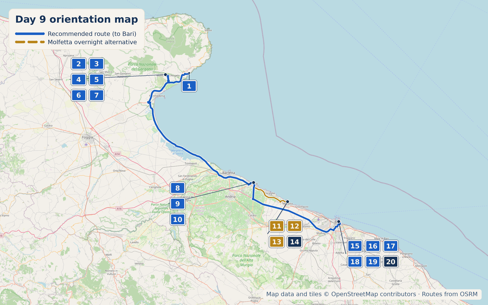

Overview
21 September 2026 is a Monday. This is the longest, most decision-heavy day on the route: Monte Sant'Angelo works as a lunch-only half-day stop, Trani gets the afternoon, and the evening comes down to a real choice between sleeping in Molfetta or Bari.

Stops

- Why stop: A UNESCO-listed sanctuary built around the cave where the Archangel Michael is said to have appeared in the 5th century; one of Western Christianity's oldest continuously visited pilgrimage sites.
- Time required: 1.5-2 hours
- Worth the detour: Yes. Even without the religious layer, the medieval hilltop town and Gargano views justify the stop.
- Approx cost: Free
- Hours: 7:30am-7:00pm daily
- Why stop: Two distinct historic quarters below the Sanctuary. Rione Junno is the old town's whitewashed, single-room terraced houses, narrow stairs, and lanes built around the pilgrim economy. Rione Grotte is the adjacent poorer quarter where residents lived in cave dwellings actually carved into the rock.
- Do not conflate them: Junno is built stone; Grotte is rock-cut.
- Time required: 30–45 min
- Why stop: A Romanesque cathedral built directly on the water's edge in local pinkish-white stone. The point is the serenity and restraint, not ornament overload.
- Time required: 1.5-2 hours for the cathedral, castle, old town, and port
- Worth the detour: Yes
- Optional climb: Tower climb is about €5 and roughly 298 steps, with views over the castle and harbour.
- Why stop: Built in the 13th century, converted to a church after the forced conversions of the 1290s, and returned to Jewish worship in 2004 for the first time in roughly 700 years. Now run by the Naples Jewish community.
- Visual note: The bell tower and Star of David on the same building make it a stronger historical counterpoint to the cathedral-on-the-sea framing than another waterfront stop.
- Time required: 20–30 min
- Approx cost/hours: Free entry Monday/Wednesday/Friday/Sunday at 11:00am; guided tours by reservation
Coffee & Pasticceria
Running since 1975. Stick to the local specialties: poperati and cartellate are Monte Sant'Angelo's own, and the most useful review notes owner AnnaPina explaining and customising a poperato-style ricotta-and-chocolate dessert on the spot.
Open late, founded by the Farucci family in 1966, and recognised by Regione Puglia as a Locale Storico. The signature is Tette delle Monache: delicate, oversized pastries that reviewers repeatedly call out as good value.
Lunch
Via Castello 21, near the castle. Historic setting, 4.5★ across 745+ reviews, and built around Gargano ingredients without sliding into tasting-menu formality.
Rustic-elegant option in the centro storico near the Basilica, roughly €25/person.
Via Reale Basilica 51, right next to the Basilica, around €10-20/person.
Dinner & Overnight
Quieter, smaller, more purely local: the honest choice if tonight should feel like a rest rather than another city to absorb.
Dinner: Dentro Le Mura, Corso Dante Alighieri 42, is the most reliably verified pick in Molfetta itself. Budget option: La Cucina del Mare, a counter-style gastronomia on Via Alfredo Baccarini.
Accommodation: Il Mulino di Amleto, Vicolo Campanile 6, a literary-themed B&B with a rooftop terrace and a host, Antonella, repeatedly praised by name.
Bigger, louder, and livelier, with Bari Vecchia to explore in the evening or the following morning.
Dinner: Al Pescatore, Piazza Federico II di Svevia 6/8, is the special-occasion seafood institution by Castello Svevo. Alternate: Al Sorso Preferito / Urban Assassineria for the Spaghetti all'Assassina story. Budget: Panificio Fiore for focaccia barese.
Accommodation: Bari Vecchia Dimora, Corte Lamberti 6, puts you right in the old town. Request a lower floor if stairs are a concern.

Local Speciality
Molfetta: Adriatic seafood: brodetto and whatever the day's catch was. No distinctly Molfetta-specific speciality has turned up in the research, which is a real gap rather than something to paper over.
Bari: Spaghetti all'assassina: pasta deliberately cooked in a hot pan until part-charred, a genuine Bari invention with a disputed-origin story attached.
What to Buy
On Strada Arco Basso, the better purchase may be attention rather than pasta: stop for a genuine 10 minutes and watch the speed and handwork before deciding whether you want a souvenir bag.
Hidden Gem
Basilica di San Nicola in Bari Vecchia is worth knowing about if the Bari route wins: an 11th-century basilica holding relics of the real St Nicholas, with significance across both Catholic and Orthodox Christianity.
Cool, Interesting & Quirky
Bari Vecchia's famous orecchiette street: women working at floured tables outside their doors, shaping pasta with a quick thumb motion while trays dry overhead. The skill on display is real and generational.
Today's Route & Timing
Print timing summary: suggested 9:00am departure. Base day covering Mattinata to Monte Sant'Angelo to Trani, including both main stops, is approximately 3h30–4h. Molfetta overnight adds 40–55 minutes from Trani; Bari overnight adds 45–65 minutes. Rione Junno & Grotte adds 30–45 minutes; Sinagoga Scolanova adds 20–30 minutes; the Trani tower climb adds 20–30 minutes; watching the orecchiette-makers on Strada Arco Basso (Bari option) adds 20–30 minutes. Under 8 hours is a comfortable day; 8–10 hours is a long day; over 10 hours is a very long day and a sign to drop an option.
Day 12 route map

Numbered points of interest
- Mattinata (Day 8 accommodation) StartContrada Torre di Lupo 20, 71030 Mattinata FG, Italy
GPS: 41.7142542, 16.0792899 - Santuario di San Michele Arcangelo Historic site / sanctuaryVia Reale Basilica 127, 71037 Monte Sant'Angelo FG, Italy
GPS: 41.7080134, 15.9547699 - Rione Junno & Rione Grotte Historic quarterVia Castello / Junno, 71037 Monte Sant'Angelo FG, Italy
GPS: 41.7073834, 15.9533918 - Pasticceria Ciuffreda Food stopVia Giuseppe Garibaldi 15, 71037 Monte Sant'Angelo FG, Italy
GPS: 41.7074364, 15.9541869 - Ristorante Medioevo LunchVia Castello 21, 71037 Monte Sant'Angelo FG, Italy
GPS: 41.7073834, 15.9533918 - Al Barone Lunch / alternateCentro storico near the Basilica, 71037 Monte Sant'Angelo FG, Italy
GPS: 41.7080134, 15.9547699 - Ristorante San Michele Lunch / budgetVia Reale Basilica 51, 71037 Monte Sant'Angelo FG, Italy
GPS: 41.7080134, 15.9547699 - Trani — the Cathedral on the Sea Historic sitePiazza Duomo 1, 76125 Trani BT, Italy
GPS: 41.2821965, 16.4183605 - Sinagoga Scolanova Optional historic siteVia Scola Nova, Giudecca quarter, 76125 Trani BT, Italy
GPS: 41.2797529, 16.4177563 - Bar Europa Food stopCorso Vittorio Emanuele 161, 76125 Trani BT, Italy
GPS: 41.2766535, 16.4174057 - Molfetta old town & Duomo di San Corrado Overnight alternativeVico Campanile, 70056 Molfetta BA, Italy
GPS: 41.2063077, 16.5979521 - Dentro Le Mura DinnerCorso Dante Alighieri 42, 70056 Molfetta BA, Italy
GPS: 41.2063077, 16.5979521 - La Cucina del Mare Dinner / budgetVia Alfredo Baccarini, 70056 Molfetta BA, Italy
GPS: 41.2063077, 16.5979521 - Il Mulino di Amleto Accommodation, alternativeVicolo Campanile 6, 70056 Molfetta BA, Italy
GPS: 41.2063077, 16.5979521 - Strada Arco Basso, Bari Vecchia Overnight town (preferred)Arco Basso, 70122 Bari BA, Italy
GPS: 41.1273126, 16.8671134 - Al Pescatore DinnerPiazza Federico II di Svevia 6/8, 70122 Bari BA, Italy
GPS: 41.1289060, 16.8676604 - Al Sorso Preferito Dinner / alternateVia Vito Nicola de Nicolò 46, 70121 Bari BA, Italy
GPS: 41.1235574, 16.8750988 - Panificio Fiore Food stop / budgetStrada Palazzo di Città 38, 70122 Bari BA, Italy
GPS: 41.1296977, 16.8709494 - Basilica di San Nicola Historic siteLargo Abate Elia 13, 70122 Bari BA, Italy
GPS: 41.1302708, 16.8701858 - Bari Vecchia Dimora Accommodation (preferred)Corte Lamberti 6, 70122 Bari BA, Italy
GPS: 41.1273126, 16.8671134
OpenStreetMap-derived orientation map only, not turn-by-turn navigation. Use the Google Maps buttons above for live routing.
If Time Is Tight
Skip Monte Sant'Angelo's town wander and stick to the Basilica itself. In Trani, the cathedral exterior and a walk along the port cover the essentials.
If You've Got Half a Day
Climb Trani's cathedral tower, then set aside 20-30 minutes to actually watch, not just photograph, the orecchiette-making on Strada Arco Basso if Bari is in play.
Skip It
🏆 Today's Winners
Road Trip Score
| Category | Rating |
|---|---|
| Food | ★★★★☆ |
| Coffee | ★★★★☆ |
| Atmosphere | ★★★★★ |
| Photography | ★★★★★ |
| History | ★★★★★ |
| Young Traveller Appeal | ★★★☆☆ |
| Worth Detour | ★★★★★ |